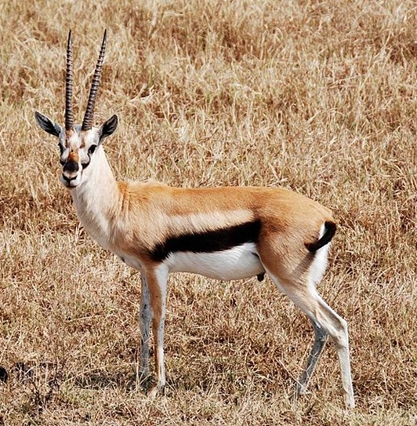

(백엔드 애들이 받아올 사용자 아이디)님 로그아웃

· 이름 : 톰슨가젤(Thompson Gazelle)
· 수명 : 5년에서 10년
· 크기 : 약12년
· 먹이 : 어린싹, 풀, 관목의 잎 등
· 서식지 : 케냐, 탄자니아, 수단의 동부지방 등지
· 부연 설명 : 소과에 속하는 가젤의 일종이자 가장 잘 알려져 있는 가젤의 하나이다. 톰슨가젤이라는 이름은 스코틀랜드의 탐험가인 조지프 톰슨에서 따왔다. 한때 가젤속으로 분류되었지만 현재는 별도의 속인 에우도르카스속에 속한다 개체수는 550,000마리로 추정되며, 이는 현존하는 가젤 중에서 가장 많은 수이나, 1978년의 개체에서 60% 줄어든 것이기에 지속적으로 개체수가 줄어들 것으로 예상된다.
· 수명 : 5년에서 10년
· 크기 : 약12년
· 먹이 : 어린싹, 풀, 관목의 잎 등
· 서식지 : 케냐, 탄자니아, 수단의 동부지방 등지
· 부연 설명 : 소과에 속하는 가젤의 일종이자 가장 잘 알려져 있는 가젤의 하나이다. 톰슨가젤이라는 이름은 스코틀랜드의 탐험가인 조지프 톰슨에서 따왔다. 한때 가젤속으로 분류되었지만 현재는 별도의 속인 에우도르카스속에 속한다 개체수는 550,000마리로 추정되며, 이는 현존하는 가젤 중에서 가장 많은 수이나, 1978년의 개체에서 60% 줄어든 것이기에 지속적으로 개체수가 줄어들 것으로 예상된다.